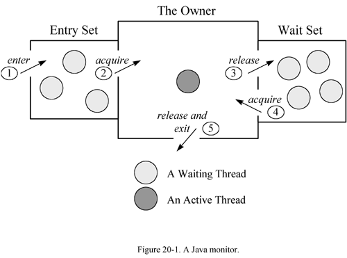

One of the strengths of the Java programming language is its support for multithreading at the language level. Much of this support centers on synchronization: coordinating activities and data access among multiple threads. The mechanism that Java uses to support synchronization is the monitor. This chapter describes monitors and shows how they are used by the Java Virtual Machine. It describes how one aspect of monitors, the locking and unlocking of data, is supported in the instruction set.
A monitor supports two kinds of thread synchronization: mutual exclusion and cooperation.
Mutual exclusion, which is supported in the Java Virtual Machine via object locks, enables multiple threads to independently work on shared data without interfering with each other.
Cooperation, which is supported in the Java Virtual Machine via the wait and notify methods of class Object, enables threads to work together towards a common goal.
A monitor is like a building that contains one special room that can be occupied by only one thread at a time. The room usually contains some data. From the time a thread enters this room to the time it leaves, it has exclusive access to any data in the room. Entering the monitor building is called "entering the monitor." Entering the special room inside the building is called "acquiring the monitor." Occupying the room is called "owning the monitor," and leaving the room is called "releasing the monitor." Leaving the entire building is called "exiting the monitor."
In addition to being associated with a bit of data, a monitor is associated with one or more bits of code called critical sections. A critical section is code that needs to be executed as one indivisible operation. In other words, one thread must be able to execute a critical section from beginning to end without another thread concurrently executing a critical section of the same monitor. A monitor enforces this one-thread-at-a-time execution of its critical sections. The only way a thread can enter a monitor is by arriving at the beginning of one of the critical sections associated with that monitor. The only way a thread can move forward and execute the critical section is by acquiring the monitor.
When a thread arrives at the beginning of a critical section, it is placed into an entry set for the associated monitor. The entry set is like the front hallway of the monitor building. If no other thread is waiting in the entry set and no other thread currently owns the monitor, the thread aquires the monitor and continues executing the critical section. When the thread finishes executing the critical section, it exits (and releases) the monitor.
If a thread arrives at the beginning of a critical section of a monitor that is already owned by another thread, the newly arrived thread must wait in the entry set. When the current owner exits the monitor, the newly arrived thread must compete with any other threads also waiting in the entry set. Only one thread will win the competition and acquire the monitor.
The first kind of synchronization listed above, mutual exclusion, refers to the mutually exclusive execution of critical sections by multiple threads. At any one time, only one thread can be executing a critical section of a particular monitor. In general, mutual exclusion is important only when multiple threads are sharing data. If two threads are not working with any common data, they usually can't interfere with each other and needn't execute in a mutually exclusive way. On a Java Virtual Machine implementation that doesn't time slice, however, a higher priority thread that is never blocked will interfere with any lower priority threads, even if none of the threads share data. The higher priority thread will monopolize the CPU at the expense of the lower priority threads. Lower priority threads will never get any CPU time. In such a case, a monitor that protects no data may be used to orchestrate these threads to ensure all threads get some CPU time. Nevertheless, in most cases a monitor protects data that is accessed through the critical section code. In cases where the data can be accessed only through the critical sections, the monitor enforces mutually exclusive access to that data.
The other kind of synchronization listed above as supported by monitors is cooperation. Whereas mutual exclusion helps keep threads from interfering with one another for sharing data, cooperation helps threads to work together towards some common goal.
Cooperation is important when one thread needs some data to be in a particular state and another thread is responsible for getting the data into that state. For example, one thread, a "read thread," may be reading data from a buffer that another thread, a "write thread," is filling. The read thread needs the buffer to be in a "not empty" state before it can read any data out of the buffer. If the read thread discovers that the buffer is empty, it must wait. The write thread is responsible for filling the buffer with data. Once the write thread has done some more writing, the read thread can do some more reading.
The form of monitor used by the Java Virtual Machine is called a "Wait and Notify" monitor. (It is also sometimes called a "Signal and Continue" monitor.) In this kind of monitor, a thread that currently owns the monitor can suspend itself inside the monitor by executing a wait command. When a thread executes a wait, it releases the monitor and enters a wait set. The thread will stay suspended in the wait set until some time after another thread executes a notify command inside the monitor. When a thread executes a notify, it continues to own the monitor until it releases the monitor of its own accord, either by executing a wait or by completing the critical section. After the notifying thread has released the monitor, the waiting thread will be resurrected and will reacquire the monitor.
The kind of monitor used in the Java Virtual Machine is sometimes called a Signal and Continue monitor because after a thread does a notify (the signal) it retains ownership of the monitor and continues executing the critical section (the continue). At some later time, the notifying thread releases the monitor and a waiting thread is resurrected. Presumably, the waiting thread suspended itself because the data protected by the monitor wasn't in a state that would allow the thread to continue doing useful work. Also, the notifying thread presumably executed the notify command after it had placed the data protected by the monitor into the state desired by the waiting thread. But because the notifying thread continued, it may have altered the state after the notify such that the waiting thread still can't do useful work. Alternatively, a third thread may have acquired the monitor after the notifying thread released it but before the waiting thread acquired it, and the third thread may have changed the state of the protected data. As a result, a notify must often be considered by waiting threads merely as a hint that the desired state may exist. Each time a waiting thread is resurrected, it may need to check the state again to determine whether it can move forward and do useful work. If it finds the data still isn't in the desired state, the thread could execute another wait or give up and exit the monitor.
As an example, consider once again the scenario described above that involves a buffer, a read thread, and a write thread. Assume the buffer is protected by a monitor. When a read thread enters the monitor that protects the buffer, it checks to see if the buffer is empty. If the buffer is not empty, the read thread reads (and removes ) some data from the buffer. Satisfied, it exits the monitor. On the other hand, if the buffer is empty, the read thread executes a wait command. As soon as it executes the wait, the read thread is suspended and placed into the monitor's wait set. In the process, the read thread releases the monitor, which becomes available to other threads. At some later time, the write thread enters the monitor, writes some data into the buffer, executes a notify, and exits the monitor. When the write thread executes the notify, the read thread is marked for eventual resurrection. After the write thread has exited the monitor, the read thread is resurrected as the owner of the monitor. If there is any chance that some other thread has come along and consumed the data left by the write thread, the read thread must explicitly check to make sure the buffer is not empty. If there is no chance that any other thread has consumed the data, then the read thread can just assume the data exists. The read thread reads some data from the buffer and exits the monitor.
A graphical depiction of the kind of monitor used by a Java Virtual Machine is shown in Figure 20-1. This figure shows the monitor as three rectangles. In the center, a large rectangle contains a single thread, the monitor's owner. On the left, a small rectangle contains the entry set. On the right, another small rectangle contains the wait set. Active threads are shown as dark gray circles. Suspended threads are shown as light gray circles.

Figure 20-1 also shows several numbered doors that threads must "pass through" to interact with the monitor. When a thread arrives at the start of a critical section, it enters the monitor via the leftmost door, door number one, and finds itself in the rectangle that houses the entry set. If no thread currently owns the monitor and no other threads are waiting in the entry set, the thread passes immediately through the next door, door number two, and becomes the owner of the monitor. As the monitor owner, the thread continues executing the critical section. If, on the other hand, there is another thread currently claiming ownership of the monitor, the newly arrived thread must wait in the entry set, possibly along with other threads already waiting there. The newly arrived thread is blocked and therefore doesn't execute any further into the critical section.
Figure 20-1 shows three threads suspended in the entry set and four threads suspended in the wait set. These threads will remain where they are until the current owner of the monitor--the active thread--releases the monitor. The active thread can release the monitor in either of two ways: it can complete the critical section it is executing or it can execute a wait command. If it completes the critical section, it exits the monitor via the door at the bottom of the central rectangle, door number five. If it executes a wait command, it releases the monitor as it travels through door number three, the door to the wait set.
If the former owner did not execute a notify before it released the monitor, then only the threads in the entry set will compete to acquire the monitor. If the former owner did execute a notify, then the entry set threads will have to compete with one or more threads from the wait set. If a thread from the entry set wins the competition, it passes through door number two and becomes the new owner of the monitor. If a thread from the wait set wins the competition, it exits the wait set and reacquires the monitor as it passes through door number four. Note that doors three and four are the only ways a thread can enter or exit the wait set. A thread can only execute a wait command if it currently owns the monitor, and it can't leave the wait set without automatically becoming again the owner of the monitor.
In the Java Virtual Machine, threads can optionally specify a timeout when they execute a wait command. If a thread does specify a timeout, and no other thread executes a notify before the timeout expires, the waiting thread in effect receives an automatic notify from the virtual machine. After the timeout expires, the waiting thread will be resurrected even if no other thread has executed an explicit notify.
The Java Virtual Machine offers two kinds of notify commands: "notify" and "notify all." A notify command selects one thread arbitrarily from the wait set and marks it for eventual resurrection. A notify all command marks all threads currently in the wait set for eventual resurrection.
To a great extent, the manner in which a Java Virtual Machine implementation selects the next thread from the wait or entry sets is a decision of individual implementation designers. For example, implementation designers can decide how to select:
You might think it would make sense to implement entry set and wait sets as first-in-first-out (FIFO) queues, so that the thread that waits the longest will be the first chosen to acquire the monitor. Alternatively, it might make sense to have ten FIFO queues, one for each priority a thread can have inside the Java Virtual Machine. The virtual machine could then choose the thread that has been waiting the longest in the highest priority queue that contains any waiting threads. Implementations may take approaches such as these, but you can't depend on it. Implementations are free to implement the entry and wait sets as last-in-first-out (LIFO) queues, to select lower priority threads before higher priority threads, or to do anything else that may not seem to make sense. Implementations are free to select threads in an arbitrary manner that defies analysis and yields surprising orderings.
As a programmer, you must not rely on any particular selection algorithm or treatment of priorities, at least if you are trying to write a Java program that is platform independent. For example, because you don't know what order threads in the wait set will be chosen for resurrection by the notify command, you should use notify (as opposed to notify all) only when you are absolutely certain there will only be one thread suspended in the wait set. If there is a chance more than one thread will be suspended in the wait set at any one time, you should probably use notify all. Otherwise, on some Java Virtual Machine implementations a particular thread may be stuck in the wait set for a very long time. If a notify always selects the most recent arrival from the wait set and the wait set always contains multiple threads, some threads that have been waiting the longest may never be resurrected.
As mentioned in earlier chapters, some of the Java Virtual Machine's runtime data areas are shared by all threads, others are private to individual threads. Because the heap and method area are shared by all threads, Java programs need to coordinate multi-threaded access to two kinds of data:
Programs never need to coordinate access to local variables, which reside on Java stacks, because data on the Java stack is private to the thread to which the Java stack belongs.
In the Java Virtual Machine, every object and class is logically associated with a monitor. For objects, the associated monitor protects the object's instance variables. For classes, the monitor protects the class's class variables. If an object has no instance variables, or a class has no class variables, the associated monitor protects no data.
To implement the mutual exclusion capability of monitors, the Java Virtual Machine associates a lock (sometimes called a mutex) with each object and class. A lock is like a privilege that only one thread can "own" at any one time. Threads need not obtain a lock to access instance or class variables. If a thread does obtain a lock, however, no other thread can access the locked data until the thread that owns the lock releases it. (To "lock an object" is to acquire the monitor associated with that object.)
Class locks are actually implemented as object locks.
As mentioned in earlier chapters, when the Java Virtual Machine loads a class file, it creates an instance of class java.lang.Class.
When you lock a class, you are actually locking that class's Class object.
A single thread is allowed to lock the same object multiple times. For each object, the Java Virtual Machine maintains a count of the number of times the object has been locked. An unlocked object has a count of zero. When a thread acquires the lock for the first time, the count is again incremented to one. Each time the thread acquires a lock on the same object, the count is again incremented. (Only the thread that already owns an object's lock is allowed to lock it again. No other thread can lock the object until the owning thread releases the lock.) Each time the thread releases the lock, the count is decremented. When the count reaches zero, the lock is released and made available to other threads.
A thread in the Java Virtual Machine requests a lock when it arrives at the beginning of a critical section. In Java, there are two kinds of critical sections: synchronized statements and synchronized methods. (These are described in detail later in this chapter.) Each critical section in a Java program is associated with an object reference. When a thread arrives at the first instruction in a critical section, the thread must obtain a lock on the referenced object. The thread is not allowed to execute the code until it obtains the lock. Once it has obtained the lock, the thread enters the block of protected code. When the thread leaves the block, no matter how it leaves the block, it releases the lock on the associated object.
Note that as a Java programmer, you never explicitly lock an object. Object locks are internal to the Java Virtual Machine. In your Java programs, you identify the critical sections of your program by writing synchronized statements and methods. As the Java Virtual Machine runs your program, it automatically locks an object or class every time it encounters a critical section.
As mentioned above, the language provides two built-in ways to identify critical sections in your programs: synchronized statements and synchronized methods. These two mechanisms, which implement the mutual exclusion aspect of synchronization, are supported by the Java Virtual Machine's instruction set.
To create a synchronized statement, you use the synchronized keyword with an expression that evaluates to an object reference, as in the reverseOrder() method below:
begin
// On CD-ROM in file threads/ex1/KitchenSync.java
class KitchenSync {
private int[] intArray = new int[10];
void reverseOrder() {
synchronized (this) {
int halfWay = intArray.length / 2;
for (int i = 0; i < halfWay; ++i) {
int upperIndex = intArray.length - 1 - i;
int save = intArray[upperIndex];
intArray[upperIndex] = intArray[i];
intArray[i] = save;
}
}
}
//...
}
end
In the above case, the statements contained within the synchronized block will not be executed until a lock is acquired on the current object (this).
If instead of a this reference, the expression yielded a reference to another object, the lock associated with that object would be acquired before the thread continued.
If the expression yields a reference to an instance of class Class, the lock associated with the class is acquired.
Two opcodes, monitorenter and monitorexit, are used for synchronization blocks within methods. These opcodes are shown in the Table 20-1.
| Opcode | Operand(s) | Description |
|---|---|---|
monitorenter |
none | pop objectref, acquire the lock associated with objectref |
monitorexit |
none | pop objectref, release the lock associated with objectref |
When monitorenter is encountered by the Java Virtual Machine, it acquires the lock for the object referred to by objectref on the stack.
If the thread already owns the lock for that object, the count that is associated with the lock is incremented.
Each time monitorexit is executed for the thread on the object, the count is decremented.
When the count reaches zero, the monitor is released.
Here is the bytecode sequence generated by the reverseOrder() method of the KitchenSync class:
begin
// First place the reference to the object to lock into local
// variable 1. This local variable will be used by both the
// monitorenter and monitorexit instructions.
0 aload_0 // Push local var 0 (the this reference)
1 astore_1 // Store into local var 1
// Now acquire the lock on the referenced object
// Push local var 1 (the this reference; the
2 aload_1 // object to lock)
// Pop reference, acquire the lock
3 monitorenter // on referenced object
// The code of the synchronized block begins here. A thread will not
// execute the next instruction, aload_0, until a lock has been
// successfully acquired on the this reference above.
4 aload_0 // Push the object ref at loc var 0 (the this ref)
// Pop object ref, push ref to instance variable
// intArray
5 getfield #4 <Field int intArray[]
8 arraylength // Pop array ref, push int array length
9 iconst_2 // Push constant int 2
10 idiv // Pop two ints, divide, push int result
// Pop int into local var 3:
11 istore_3 // int halfway = intArray.length/2;
// This is the start of the code for the for loop
12 iconst_0 // Push constant int 0
13 istore 4 // Pop into local var 2: int i = 0;
15 goto 65 // Jump to for loop condition check
// This is the start of the body of the for loop
18 aload_0 // Push the object ref at loc var 0 (the this ref)
// Pop object ref, push ref to instance variable
// intArray
19 getfield #4 <Field int intArray[]
22 arraylength // Pop array ref, push int array length
23 iconst_1 // Push constant int 1
24 isub // Pop two ints, subtract, push int result
25 iload 4 // Push int at local var 4 (i)
27 isub // Pop two ints, subtract, push int result
// Pop int into local var 5:
28 istore 5 // int upperindex = intArray.length - 1 - i;
30 aload_0 // Push the object ref at loc var 0 (the this ref)
// Pop object ref, push ref to instance variable
// intArray
31 getfield #4 <Field int intArray[]
34 iload 5 // Push int at local var 5 (upperIndex)
36 iaload // Pop index, arrayref, push int at arrayref[index]
// Pop into local var 6:
37 istore 6 // int save = intArray[upperIndex];
39 aload_0 // Push the object ref at loc var 0 (the this ref)
// Pop object ref, push ref to instance variable
// intArray
40 getfield #4 <Field int intArray[]
43 iload 5 // Push int at local var 5 (upperIndex)
45 aload_0 // Push the object ref at loc var 0 (the this ref)
// Pop object ref, push ref to instance variable
// intArray
46 getfield #4 <Field int intArray[]
49 iload 4 // Push int at local var 4 (i)
51 iaload // Pop index, arrayref, push int at arrayref[index]
// Set arrayref[index] = value:
52 iastore // intArray[upperIndex] = intArray[i];
53 aload_0 // Push the object ref at loc var 0 (the this ref)
// Pop object ref, push ref to instance variable
// intArray
54 getfield #4 <Field int intArray[]
57 iload 4 // Push int at local var 4 (i)
59 iload 6 // Push int at local var 6 (save)
// Set arrayref[index] = value:
61 iastore // intArray[i] = save;
// The body of the for loop is now done, this instruction does
// the incrementing of the loop variable i
62 iinc 4 1 // Increment by 1 int at local var 4: ++i;
// This is the for loop condition check:
65 iload 4 // Push int at local var 4 (i)
67 iload_3 // Push int at local var 3 (halfway)
// Pop two ints, compare, jump if less than to
68 if_icmplt 18 // top of for loop body: for (; i < halfway;)
// The code of the synchronized block ends here
// The next two instructions unlock the object, making it available
// for other threads. The reference to the locked object was stored
// in local variable 1 above.
71 aload_1 // Push local var 1 (the this reference)
72 monitorexit // Pop ref, unlock object
73 return // return normally from method
// This is a catch clause for any exception thrown (and not caught
// from within the synchronized block. If an exception is thrown,
// the locked object is unlocked, making it available for other
// threads.
74 aload_1 // Push local var 1 (the this reference)
75 monitorexit // Pop ref, unlock object
76 athrow // rethrow the same exception
// The exception table shows the "catch all" clause covers the
// entire synchronized block, from just after the lock is acquired
// to just before the lock is released.
Exception table:
from to target type
4 71 74 any
end
Note that a catch clause ensures the locked object will be unlocked even if an exception is thrown from within the synchronized block. No matter how the synchronized block is exited, the object lock acquired when the thread entered the block will definitely be released.
To synchronize an entire method, you just include the synchronized keyword as one of the method qualifiers, as in:
begin
// On CD-ROM in file threads/ex1/HeatSync.java
class HeatSync {
private int[] intArray = new int[10];
synchronized void reverseOrder() {
int halfWay = intArray.length / 2;
for (int i = 0; i < halfWay; ++i) {
int upperIndex = intArray.length - 1 - i;
int save = intArray[upperIndex];
intArray[upperIndex] = intArray[i];
intArray[i] = save;
}
}
//...
}
end
The Java Virtual Machine does not use any special opcodes to invoke or return from synchronized methods.
When the virtual machine resolves the symbolic reference to a method, it determines whether the method is synchronized.
If so, the virtual machine acquires a lock before invoking the method.
For an instance method, the virtual machine acquires the lock associated with the object upon which the method is being invoked.
For a class method, it acquires the lock associated with the class to which the method belongs (it locks a Class object).
After a synchronized method completes, whether it completes by returning or by throwing an exception, the virtual machine releases the lock.
Here are the bytecodes that javac generates for HeatSync's reverseOrder() method:
begin
0 aload_0 // Push the object ref at loc var 0 (the this ref)
// Pop object ref, push ref to instance variable
// intArray
1 getfield #4 <Field int intArray[]
4 arraylength // Pop array ref, push int array length
5 iconst_2 // Push constant int 2
6 idiv // Pop two ints, divide, push int result
// Pop int into local var 1:
7 istore_1 // int halfway = intArray.length/2;
// This is the start of the code for the for loop
8 iconst_0 // Push int constant 0
9 istore_2 // Pop into local var 2: int i = 0;
10 goto 54 // Jump to for loop condition check
// This is the start of the body of the for loop
13 aload_0 // Push the object ref at loc var 0 (the this ref)
// Pop object ref, push ref to instance variable
// intArray
14 getfield #4 <Field int intArray[]
17 arraylength // Pop array ref, push int array length
18 iconst_1 // Push constant int 1
19 isub // Pop two ints, subtract, push int result
20 iload_2 // Push int at local var 2 (i)
21 isub // Pop two ints, subtract, push int result
// Pop int into local var 3:
22 istore_3 // int upperindex = intArray.length - 1 - i;
23 aload_0 // Push the object ref at loc var 0 (the this ref)
// Pop object ref, push ref to instance variable
// intArray
24 getfield #4 <Field int intArray[]
27 iload_3 // Push int at local var 3 (upperIndex)
28 iaload // Pop index, arrayref, push int at arrayref[index]
// Pop into local var 4:
29 istore 4 // int save = intArray[upperIndex];
31 aload_0 // Push the object ref at loc var 0 (the this ref)
// Pop object ref, push ref to instance variable
// intArray
32 getfield #4 <Field int intArray[]
35 iload_3 // Push int at local var 3 (upperIndex)
36 aload_0 // Push the object ref at loc var 0 (the this ref)
// Pop object ref, push ref to instance variable
// intArray
37 getfield #4 <Field int intArray[]
40 iload_2 // Push int at local var 2 (i)
41 iaload // Pop index, arrayref, push int at arrayref[index]
// Pop value, index, and arrayref,
// Set arrayref[index] = value:
42 iastore // intArray[upperIndex] = intArray[i];
43 aload_0 // Push the object ref at loc var 0 (the this ref)
// Pop object ref, push ref to instance variable
// intArray
44 getfield #4 <Field int intArray[]
47 iload_2 // Push int at local var 2 (i)
48 iload 4 // Push int at local var 4 (save)
// Pop value, index, and arrayref,
// Set arrayref[index] = value:
50 iastore // intArray[i] = save;
// The body of the for loop is now done, this instruction does
// the incrementing of the loop variable i
51 iinc 2 1 // Increment by 1 int at local var 2: ++i;
// This is the for loop condition check:
54 iload_2 // Push int at local var 2 (i)
55 iload_1 // Push int at local var 1 (halfway)
// Pop two ints, compare, jump if less than to
56 if_icmplt 13 // top of for loop body: for (; i < halfway;)
59 return // return (void) from method
end
If you compare these bytecodes with the ones shown earlier for KitchenSync's reverseOrder() method,
you will see that these bytecodes are in effect those of KitchenSync with the support for entering and exiting the monitor removed.
Instructions at offset 0 through 56 of HeatSync's bytecodes correspond to instructions at offset 4 through 68 of KitchenSync's bytecodes.
Because HeatSync's reverseOrder() method doesn't need a local variable slot to store the reference to the locked object,
the local variable positions used by each method are different.
The function of the instructions themselves, however, match up exactly.
Another difference between the two reverseOrder() methods is that the compiler doesn't create an exception table for HeatSync's reverseOrder() method.
In HeatSync's case, an exception table isn't necessary.
When this method is invoked, the Java Virtual Machine automatically acquires the lock on the this object.
If this method completes abruptly, just as if it completes normally, the virtual machine will release the lock on the this object automatically.
A synchronized class (static) method operates in the same way as the synchronized instance method shown in the example above.
The one difference is that instead of acquiring a lock on this (as there is no this in a class method),
the thread must acquire a lock on the appropriate Class instance.
Class Object declares five methods that enable programmers to access the Java Virtual Machine's support for the coordination aspect of synchronization.
These methods are declared public and final, so they are inherited by all classes.
They can only be invoked from within a synchronized method or statement.
In other words, the lock associated with an object must already be acquired before any of these methods are invoked.
The methods are listed in Table 20-2.
| Method | Description |
|---|---|
void wait(); |
Enter a monitor's wait set until notified by another thread |
void wait(long timeout); |
Enter a monitor's wait set until notified by another thread or timeout milliseconds elapses |
void wait(long timeout, int nanos); |
Enter a monitor's wait set until notified by another thread or timeout milliseconds plus nanos nanoseconds elapses |
void notify(); |
Wake up one thread waiting in the monitor's wait set. (If no threads are waiting, do nothing.) |
void notifyAll(); |
Wake up all threads waiting in the monitor's wait set. (If no threads are waiting, do nothing.) |
The CD-ROM contains the source code examples from this chapter in a subdirectory of the threads directory.
For more information about the material presented in this chapter, visit the resources page: http://www.artima.com/insidejvm/threads.html.